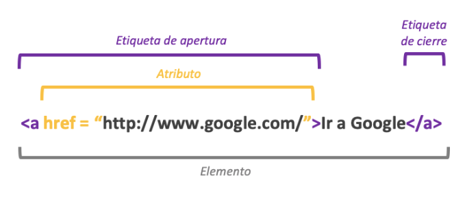

Los atributos: pares nombre-valor separados por "=" y escritos en la etiqueta inicial de un elemento después del nombre del elemento. El valor puede estar encerrado entre "comillas dobles" o 'simples'. Existen, también, algunos atributos que afectan al elemento por su presencia en la etiqueta de inicio, como puede ser el atributo ismap para el elemento (Eguiluz, 2014)

Delgado, I. (2020, 7 abril). Etiquetas y Atributos en HTML [Ilustración]. Etiquetas y Atributos en HTML. https://www.google.com/url?sa=i&url=https%3A%2F%2Fwww.irinadelgado.com%2Fetiquetas-y-atributos-en-html%2F&psig=AOvVaw129vZApcuc-NKAKHkwGvY-&ust=1650744579187000&source=images&cd=vfe&ved=0CAwQjRxqFwoTCLDH_fW8qPcCFQAAAAAdAAAAABAJ
Tipos de Atributos
Aunque cada una de las etiquetas HTML define sus propios atributos, encontramos algunos comunes a muchas o casi todas las etiquetas, que se dividen en cuatro grupos según su funcionalidad:
Atributos basicos
Atributos de Internacionalizacion
Atributos de Eventos
Atributos de foco
Atributos Basicos
Los atributos básicos se utilizan en la mayoría de etiquetas HTML y XHTML, aunque adquieren mayor sentido cuando se utilizan hojas de estilo en cascada (CSS):
Atributo
Descripcion
id="texto"
Establece un indicador único a cada elemento
class="texto"
Establece la clase CSS que se aplica a los estilos del elemento
style="texto"
Aplica de forma directa los estilos CSS de un elemento
title="texto"
Establece el título del elemento (Mejora la accesibilidad)
Atributos de Internacionalizacion
Estos atributos se utilizan en aquellas páginas que muestran sus contenidos en varios idiomas y las que quieran indicar de forma explícita el idioma de sus contenidos:
Atributo
Descripcion
lang="codigo"
Indica el idioma del elemento
xml:lang="codigo"
Indica el idioma del elemento, aunque tiene más prioridad que el atributo anterior y es obligatorio si se incluye el atributo lang